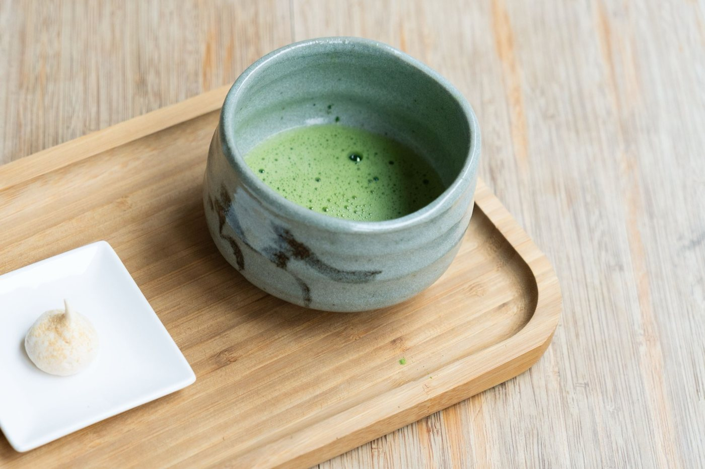
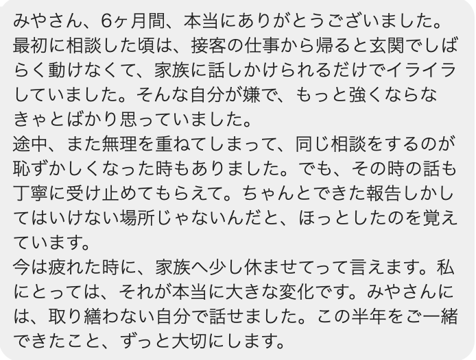
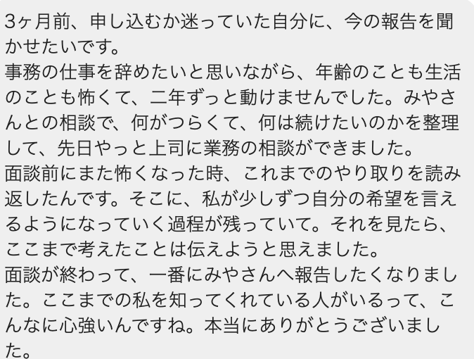
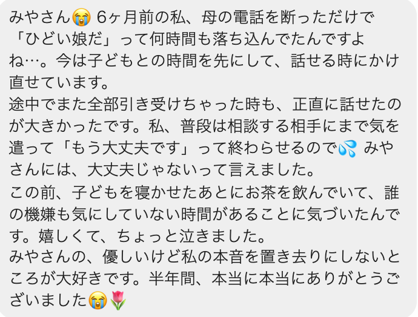
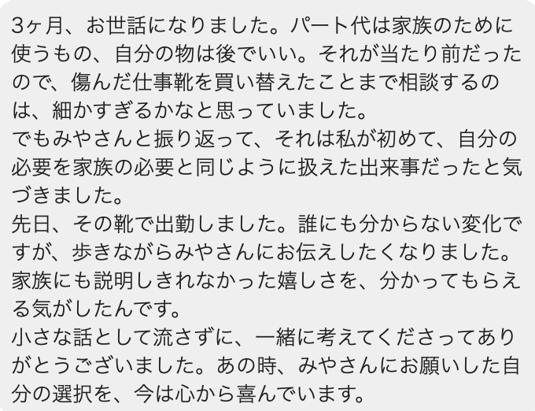
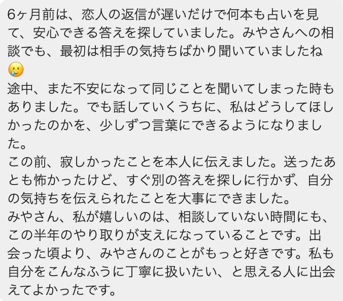

暮らしの伴走
読み終えて、
少し肩の力が
抜けたあなたへ
本鑑定を受け取った方だけが読めるページです
SCROLL
本鑑定を読み終えた今、胸のあたりが少し軽くなっとるんやないかな。
ずっと同じところで疲れとった理由が、やっと言葉になった。
運が止まっていた場所が、ちゃんと見えた。
その感覚、本物やけん。

いつもの時間に起きて、
いつもの玄関を出て、
いつもの職場や家事に戻って、
いつもの人に、いつもの顔で応えとる。
そして夜、洗面台の前で、ふと思う。
——あれ、私、
何が分かったんやったっけ。
忘れっぽいわけじゃないし、鑑定が浅かったわけでもないんよ。
その中で、同じことが
何度も起きるのを見てきたんよ。
たとえば、こんなことが起きるんよ。
気合いが
足りんけんやないとよ。
何年もかけて
身についた暮らしの癖は、
気づいたくらいでは
変わらんのよ。
「今日も言えなかった」
「また引き受けてしまった」
「私さえ我慢すれば」
疲れとる時ほど、無理をして合わせる。
嫌なのに断れん。
自分の本音を、いちばん後回しにする。
それはもう、癖なんよ。
変わろうと思った日、これまでにもあったよね。
本を読んで、たしかにと思った日。
誰かの話を聞いて、明日から変えようと決めた日。
年が明けて、今年こそはと思った日。
あの時、たしかにそう思った。嘘やなかった。
でも2週間後には、また元の暮らしに戻っとった。
あなたは、変われん人じゃない。
一人で変わろうとしとっただけなんよ。
本鑑定でお渡ししたものは、地図なんよ。
今、どこで運が止まっているのか。
どこで気持ちが重くなりやすいのか。
どこから整えると、軽くなるのか。

疲れとる日は、地図を開くことも忘れてしまう。
不安な日は、整えるはずの場所を見たくなくなる。
急いどる日は、いつもの動きに戻ってしまう。
必要なのは、
もっと詳しい地図じゃない。
迷った時に「今、ここよ」と
言ってくれる人なんよ。
特別な日に、特別なことをする場所やないんよ。
なんでもない日の、なんでもない暮らし。
そこに私がおるけんね。
毎朝、その日の気持ちを整えるメッセージを送ります。読むのに1分もかかりません。
でも、この1分があるかないかで、その日の玄関の出方や、人との距離の取り方が変わっていきます。
鑑定で見えたことを、毎朝思い出せる状態にしておく。
それだけのことやけど、一人ではいちばん続かんことでもあるんよ。

何かあった時は、LINEに送ってね。当日中にお返事します。回数の制限はありません。
今日、帰り道で急に重くなった。
断ろうと思ったのに、また引き受けてしまった。
理由は分からんけど、朝から落ち着かない。
そういう小さな揺れこそ、送ってほしいと。
大きくなってからやと、もう元の動き方に足が向いとるけん。
玄関、洗面台、財布、寝室、通勤路、よく見る数字。
生活の導線から、今どこで運が止まっているのかを見て、文章でお伝えします。
本鑑定で見えた場所を、まず整える。
そこが軽くなったら、次の場所へ。
怖がらせるためじゃなく、軽くなるために、一つずつ進めていきます。
仕事や人間関係で迷った時も同じ。
辞めるか続けるかの二択にしないで、どの曜日、どの人、どの場所で体が重くなるのかを、一緒に分けて見ていきます。

「なんだか疲れが取れない」
「理由もなく落ち込む」
「人と会った後、どっと重い」
それは気のせいやなくて、人の気や場の空気を受け取りやすい体質のサインかもしれん。
返事を決める前に、胸が広がるか、狭くなるか。
その小さな目印を、一緒に確かめていきます。
季節や暦の節目に合わせて、今の流れを見直し、次に整える場所をお伝えします。
朝、メッセージを読む。
昼、揺れたらLINEに送る。
夜、私の返事を読んで、
今日の自分に戻る。
それを、明日も。
やっていることは、
地味です。
毎朝、声をかける。
揺れたら、その日のうちに返す。
今どこで止まっているかを、文章で伝える。
暮らしの中の一か所を、一緒に整える。
届いたLINEを、そのまま載せとるよ。





プランの違いは、
一緒に整えていく暮らしの範囲と深さです。
毎朝のメッセージと、当日中のLINEのお返事は
どのプランにもあります。
違うのは、玄関や洗面台のような入口から、
水まわり、持ち物、人との距離、仕事やお金の選び方まで、
どこまで広げて整えていくか。
期間が長いほど、暮らしの奥まで届きます。
だから、値段で
選ばんでいいと。
あなたが、
どこまで整えたいかやけん。
運の止まりは、一度整えただけで全部ほどけるもんやないんよ。
最初は、いちばん重い一か所が軽くなる。
次に、その周りの習慣がゆるむ。
それを重ねていくうちに、ようやく人との距離や、お金や仕事の選び方まで届きはじめます。
散らかった部屋を、1日で完璧にするのは難しいやろ。
でも、毎日一か所ずつ整えていくと、いつのまにか家全体の空気が変わっとる。
あれと、同じです。
2週間は、いちばん重い一か所まで。
1ヶ月で、毎日の習慣まで。
3ヶ月で、人との距離まで。
6ヶ月で、人生の選び方まで。
整えていける暮らしの範囲が、
ここまで違います。
朝いちばんに目に入る場所に。
スマホを開くたびに、自分に戻るきっかけになります。
本鑑定で見えた「いちばん止まっている場所」から整えます
まず試してみたい方へ。毎朝のメッセージと、当日中のLINEのお返事つき。
本鑑定で見えた場所を、一緒に一つ整えます。
正直にお伝えすると、2週間は、整い始めた頃に終わります。
＋ あなた専用の待ち受け画像付き 2週間ではじめる入口だけでなく、毎日の動き方まで広げて整えます
整った後、必ず一度、元に戻ろうとする時期が来ます。一人だと、ここでほとんどの人が戻ってしまいます。
1ヶ月あれば、その波を一緒に一度またげます。
気づきが行動に変わり、暮らしに根づくまで見届けます
気づきが行動に変わり、日常に馴染むまでには時間がかかります。
3ヶ月は、あなたの周りが変わり始めるのに必要な、いちばん短い時間です。
暮らし全体と、人生の選び方の根っこまで整えます
仕事、お金、家族、自分自身。いくつものテーマが絡んでいる方へ。
季節が一巡するあいだ、暮らし全体を一緒に見直していきます。
今の状況を、そのままLINEへ。
どの長さが合うか、私からお返事します。
食費を削る。支払いを後ろにずらす。誰かに借りる。
もしそうなるなら、今回は見送ってね。
暮らしを壊してまで来ることを、神様は望んでいません。
私も、望んでいません。
状況が変わった時に、また来てくれたらいい。
その時、私はここにおるけんね。
私も昔は、元気に振る舞いながら、家に帰ると動けんくなるほど疲れとったと。
歯科衛生士として働いとった頃、患者さんの不安や職場の緊張を、体ごと受け取っとったんよね。
当時は「自分が弱いだけ」やと思っとった。
鑑定書は、どれだけ丁寧に書いても、紙です。
読んだ日は、たしかに心が動く。
でも、次の朝が来て、その次の朝が来て、気づけば元の速さで走っとる。
だから、この場所を作りました。
朝、声をかける。
揺れたら、その日のうちに返す。
今どこで止まっているか、伝える。
暮らしの中の一か所を、一緒に整える。
それだけです。
でも、あなたが戻りかけた時に、毎回そこに誰かがおるっていうのは、一人で頑張ることとは、まったく違うんよ。